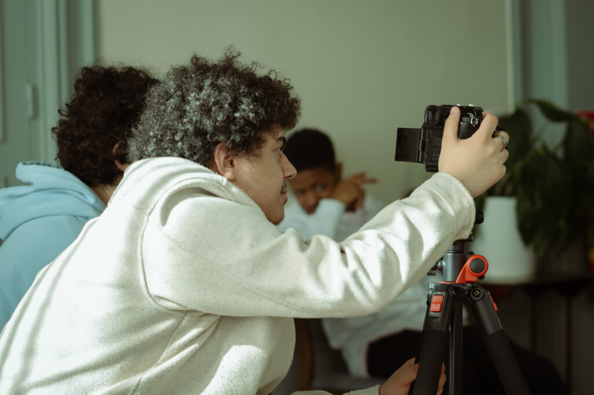

Construire votre avenir professionnel : l’E2C92 vous accompagne dans un parcours individualisé, gratuit et en alternance.
- Le label E2C : gage de qualité.
- Un réseau d’entreprises partenaires engagées et citoyennes.
- Des liens privilégiés avec les organismes de formation en lien avec les métiers choisis.
- L’élaboration d’un projet professionnel et personnel.

Les 5 grandes étapes du parcours
1. Intégration : Accueil, remise en confiance et exploration du monde professionnel (3 semaines en centre, 2 en stage).
2. Émergence de projet : 8 semaines pour découvrir le monde de l’entreprise, développer les compétences sociales et professionnelles.
3. Construction du projet individuel : Définir le projet professionnel ou la formation. L’alternance permet de le valider.
4. Validation des acquis : Se fixer des objectifs personnels, mettre en œuvre son projet et le faire aboutir.
5. Insertion professionnelle : Comprendre les attentes de l’entreprise et signer un contrat (CDI, CDD, alternance) ou entrer en formation.
Les prérequis d'entrée
L’accès au dispositif E2C repose sur des critères d’éligibilité favorisant l’accompagnement des jeunes les plus éloignés de l’emploi :
- Être orienté par un prescripteur ou candidater directement.
- Aucun niveau scolaire n’est exigé : l’entrée se fait sur la base de la motivation.
- Être âgé(e) de 16 à 25 ans (jusqu’à 30 ans pour les personnes en situation de handicap).
- Être sorti du système scolaire avec ou sans diplôme et sans qualification.
Les modalités d'évaluation
L’évaluation est continue et basée sur les compétences (Positionnement, PIF, évaluations régulières, portfolio). À l’issue du parcours, une Attestation de Compétences Acquises est délivrée au jeune.
